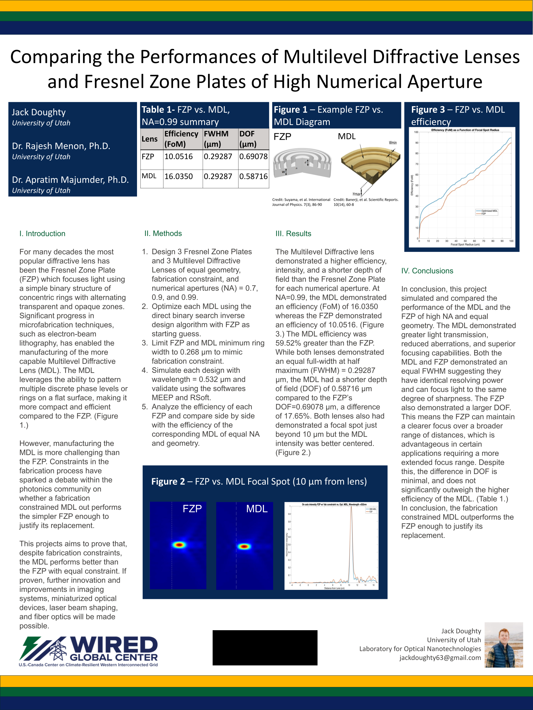
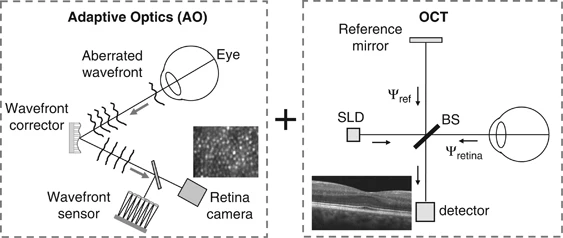

Wavefront Sensorless AO-OCT Cell Visualization
Contributed to GPU-accelerated registration workflows in AO-OCT at the HST-Wellman Summer Institute, enabling first in-vivo visualization of retinal ganglion cells in this imaging framework.
Academic Profile
Data Science undergraduate and biomedical optics researcher focused on adaptive optics OCT, diffractive optics, inverse design, and computational imaging.
I am an undergraduate student at the University of Utah pursuing a B.S. in Data Science with a minor in Mathematics (expected May 2026, GPA 3.91). My work sits at the intersection of data science, physics, and biomedical imaging, with a particular emphasis on translating optical theory into practical, clinically relevant tools.
Contributed to GPU-accelerated registration workflows in AO-OCT at the HST-Wellman Summer Institute, enabling first in-vivo visualization of retinal ganglion cells in this imaging framework.
Co-first author work comparing diffractive imaging performance and practical trade-offs between Fresnel zone plates and metalenses, published in Optics Express.
Developed drone-mounted imaging methods during NSF REU WIRED to detect vegetation encroachment near powerline infrastructure using computational analysis pipelines.


Adaptive optics OCT research, GPU registration methods, and biomedical imaging analysis.
Worked on optical systems and computational methods in advanced imaging contexts.
Developed data-driven imaging solutions for infrastructure and environmental monitoring.
Contributed to interdisciplinary scientific research and technical communication initiatives.
Planned internship focused on machine learning, time-series modeling, and FP&A analytics.
Email: jdoughty2@mgh.harvard.edu
Phone: (508) 838-3823
LinkedIn: linkedin.com/in/jack-doughty1
GitHub: github.com/jvckdough